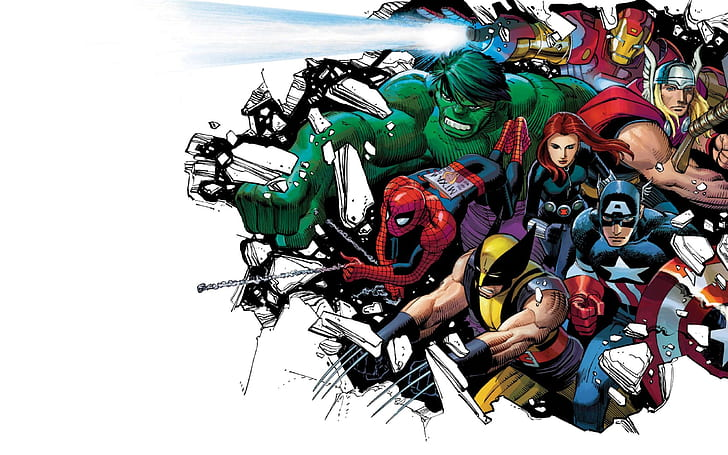
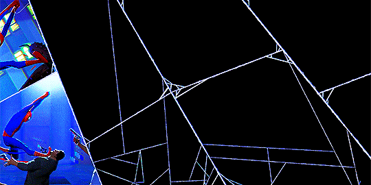
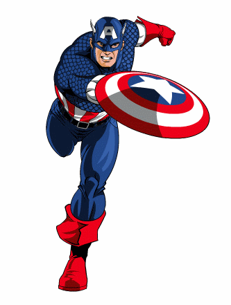

EL UNIVERESO DE MARVEL
Hoy vamos a hablar sobre los personajes de Marvel, una de las franquicias de entretenimiento más populares del mundo. Marvel ha creado un universo rico y complejo con cientos de personajes, cada uno con su propia historia y poderes únicos.
En esta presentación, veremos algunos de los personajes más icónicos de Marvel, como Spider-Man, Iron Man, Capitán América y Thor.

SpiderMan

Al principio, Peter se siente incómodo con sus nuevos poderes. No sabe cómo usarlos y se siente responsable de la muerte del tío Ben, que fue asesinado por un ladrón que Peter pudo haber detenido.
Sin embargo, Peter finalmente se da cuenta de que tiene la responsabilidad de usar sus poderes para ayudar a los demás.
Spider-Man tiene una serie de poderes y habilidades sobrehumanas, que incluyen: fuerza, velocidad y agilidad sobrehumanas;
la capacidad de trepar por las paredes;
la capacidad de disparar telarañas desde sus muñeca.
THOR

Thor es un superhéroe de Marvel Comics que es el dios del trueno y la tormenta. Es el hijo de Odín, el rey de Asgard, y Frigga, la reina de Asgard. Thor es un guerrero poderoso que utiliza su martillo místico, Mjolnir, para luchar contra el mal.
Un príncipe arrogante que es exiliado a la Tierra por su padre. En la Tierra, Thor aprende a ser humilde y a usar sus poderes para ayudar a los demás. Thor se convierte en un miembro de los Vengadores, un equipo de superhéroes que lucha por proteger el mundo.
Iron Man

Iron Man es un superhéroe de Marvel Comics que es un genio, multimillonario, playboy y filántropo. Su nombre real es Tony Stark, un inventor y empresario que crea una armadura de alta tecnología para luchar contra el crimen.
Iron Man es uno de los superhéroes más populares de Marvel. Ha sido adaptado a una variedad de medios, incluyendo cómics, películas, televisión, videojuegos y juguetes. La versión de Iron Man del Marvel Cinematic Universe, interpretada por Robert Downey Jr., es una de las versiones más populares del personaje.
Stark decide usar su armadura para luchar contra el crimen y proteger a los inocentes. Se convierte en Iron Man, un superhéroe que utiliza su tecnología para ayudar a los demás. Iron Man es un miembro fundador de los Vengadores, un equipo de superhéroes que lucha por proteger el mundo.
Capitán America

Capitán América es un superhéroe de Marvel Comics que es un símbolo de la libertad y la justicia. Su nombre real es Steve Rogers, un joven frágil que es transformado en un supersoldado por un suero experimental.
Capitán América es un líder nato y un hábil combatiente. Utiliza su fuerza, velocidad y agilidad para luchar contra el crimen y proteger a los inocentes. Capitán América es un miembro fundador de los Vengadores, un equipo de superhéroes que lucha por proteger el mundo.
Rogers es inyectado con un suero experimental que lo transforma en un supersoldado. Con su nueva fuerza, velocidad y agilidad, Rogers se convierte en Capitán América, un superhéroe que lucha contra las fuerzas del Eje. Capitán América es un símbolo de la libertad y la justicia, y su historia ha inspirado a generaciones de lectores.